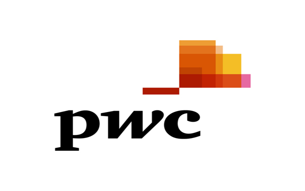

"You must be the change you wish to see in the world" - Mahatma Gandhi
 American
Express American
Express |
Infosys
Limited |
Infosys
Limited |
 Engineer - I Engineer - I |
Senior
Software Engineer |
Software
Engineer |
 Sept 2015 -
Present Sept 2015 -
Present |
May 2014 -
Sept 2015 |
Aug 2011 - May
2014 |
 FL, USA FL, USA |
GA, USA |
Pune, India |
 Technology : REST Concepts, Apigee (Proxy Layer) Frameworks : Springs, REST EASY Servers & Env : EPass, Jboss Server Project Duration : 8 months Team Size : 3 Project1: Designed the complete Resource framework and developed A2A and B2B Restful API’s based on ICLIC Data Model. ICLIC Api's are proxied through APIGEE(GOOGLE product) used for monitoring and traffic management. Back End services are deployed in epass and uses Springs framework to connect to DB2. Designing Resource Framework helped us in identifying all resources essential to leverage ICLIC data models. Using APIGEE improved the security and traffic management of the api's drastically. Technology : Big Data Concepts, Unix Scripting Frameworks : Spark & Hive Servers & Env : Silver Cluster Project Duration : 6 months Team Size : 2 Project2: Implemented BK-Tree algorithm on Silver cluster (Big Data platform) to solve an intricate matching problem. This helped us in reducing the matching time of an input against 10 million records from 3.7 seconds to just 0.6 seconds. The solution is implemented in Core Java using spark framework and Big Data EcoSystem. |
Technology : Provisioning Concepts, Java, SOAP Frameworks : Springs IOC, IBatis, XSLT, CXF Servers & Env : Tomcat on Unix box Tools : Toad, SoapUI, Putty, WinSCP, Cigwin External Systems : iControl, SmartVue Database : Oracle 11g Project Duration : 1 year Team Size : 4 Project: Developed service platforms - Home Security and Business Security for Cox Communications. These Systems are used for provisioning customers who opt for Cox residential and commercial security packages. Systems front end is ICOMS (ordering Management system) to create customer’s account and sends service transactions through to the Provisioning Transaction Manager (PTM). PTM, which is a java standalone application, parses and validates requests and process orders through java work flow engine. Home Security and Business Security today generates $10 million of revenue per year for Cox Communications and is thus a very critical provisioning system. Both the systems enable Cox Communications to be a one stop shop for customers looking for Security, Internet, Cable connections and other services. Client: Cox Communications |
Technology : iOS, Java Frameworks : JAXB, Apache Axis 2, Jackson Servers & Env : WebSphere External Systems : Cisco, Lotus Notes Database : SQL server 2008 R2 Project1: Developed a mobile app which allow users to create “Out Of Office” request. Users can receive official calls on his/her personal number using cisco call forwarding. Users can also format an OutOfOffice message which will be auto sent to whom so ever is trying to contact the User. Technology : iOS, Java Frameworks : Jersey ,JDBC, XML Parsers, log4j Servers & Env : WebSphere Tools : Fortify, Eclipse Database : SQL server 2008 R2 Project2: Designed an iOS native app to locate PwC offices around the globe. Application provides driving directions, office details, and shows the location of office on Google maps. Technology : iOS, Java Frameworks : SAP JCO, L-Dap, log4j Servers & Env : WebSphere External Systems : SAP, Enterprise Directory Database : SQL server 2008 R2 Project3: Developed Enterprise mobile application for filling work hours for PwC employees. Application used SAP systems as back end. App will sync with different devices and used color codes to show sync errors, for a successful sync or when sync is in process. Client: PricewaterhouseCoopers |
These are few of my achievements and accolades which makes me passionate to grow in technology


-
Client - PricewaterhouseCoopers
Aug 1st, 2011 To May 12th, 2014I worked for PwC for approximately three years from Offshore location, India. We developed various Enterprise Mobile and Web applications like OutOfOffice, OfficeLocator, MobileTime, etc for different platforms like IOS, Android and Desktop. I laid my hands on various Technology stacks like REST based web services for Business Layer, presentation layer coding in JQUERY, Javascript and integration with different backends like SAP, Lotus Notes, Cisco, etc.
Please go to Experience & Resume tab for more detailed information on projects i have done for PwC